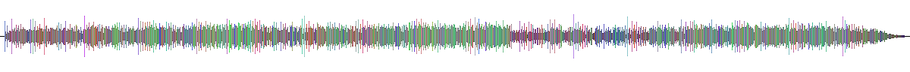

Moodbars are back.
The classic audio visualization, rebuilt for modern developers. One Rust core. CLI, Web, and Native bindings.

Why Moodbar.rs?
Cross-Platform
Deploy anywhere. Native bindings for iOS/Android, WASM for the browser, and a powerful CLI.
Modern Formats
Generate SVG and PNG rendering paths, or use legacy-compatible raw output.
Pure Rust Core
A single, optimized DSP pipeline ensures identical audio analysis across all platforms.
Published Packages & Source
- Legacy-compatible raw moodbar output. (crates.io/crates/moodbar)
- WASM bindings for browser-first workflows. (npm: @moodbar/wasm)
- Native mobile bindings for iOS/Android. (npm: @moodbar/native)
- Amarok-era idea, portable and hackable. (GitHub Repository)
What is a Moodbar?
A visual timeline of a song that maps frequencies and intensities to colors. The classic strip shows you the overall mood and progression of the track visually.

React Native Integration
The @moodbar/native package provides drop-in React Native
/ Expo support. It uses the exact same Rust core for DSP via C ABI
bindings.
import { analyze, render } from '@moodbar/native';
// Pass advanced DSP options via JSON
const options = { normalize_mode: "GlobalPeak", frames_per_color: 2 };
// Analyze audio and render
const analysis = await analyze({ uri: '/path/to/audio.flac' }, options);
const pngBytes = await render(analysis, "png", { width: 1000, height: 100 });
CLI Quick Start
cargo install moodbar
moodbar generate -i input.flac -o output.svg --format svg
moodbar --help